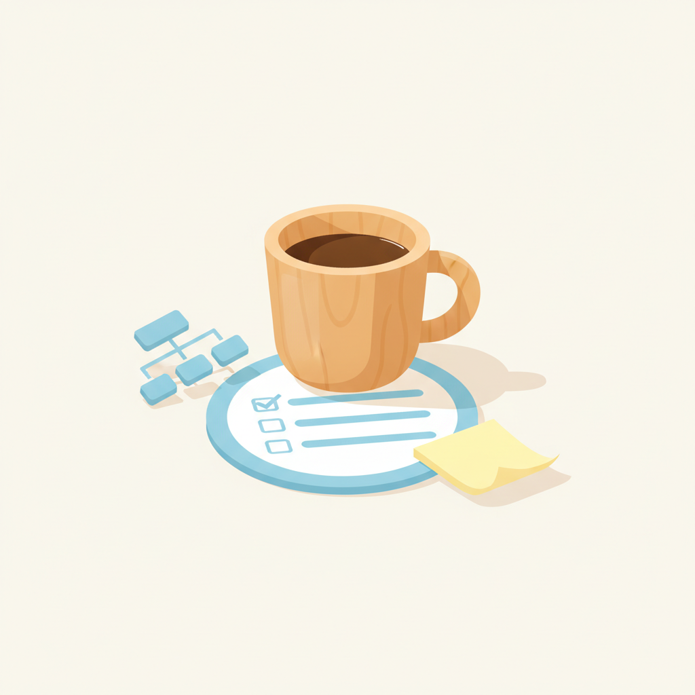
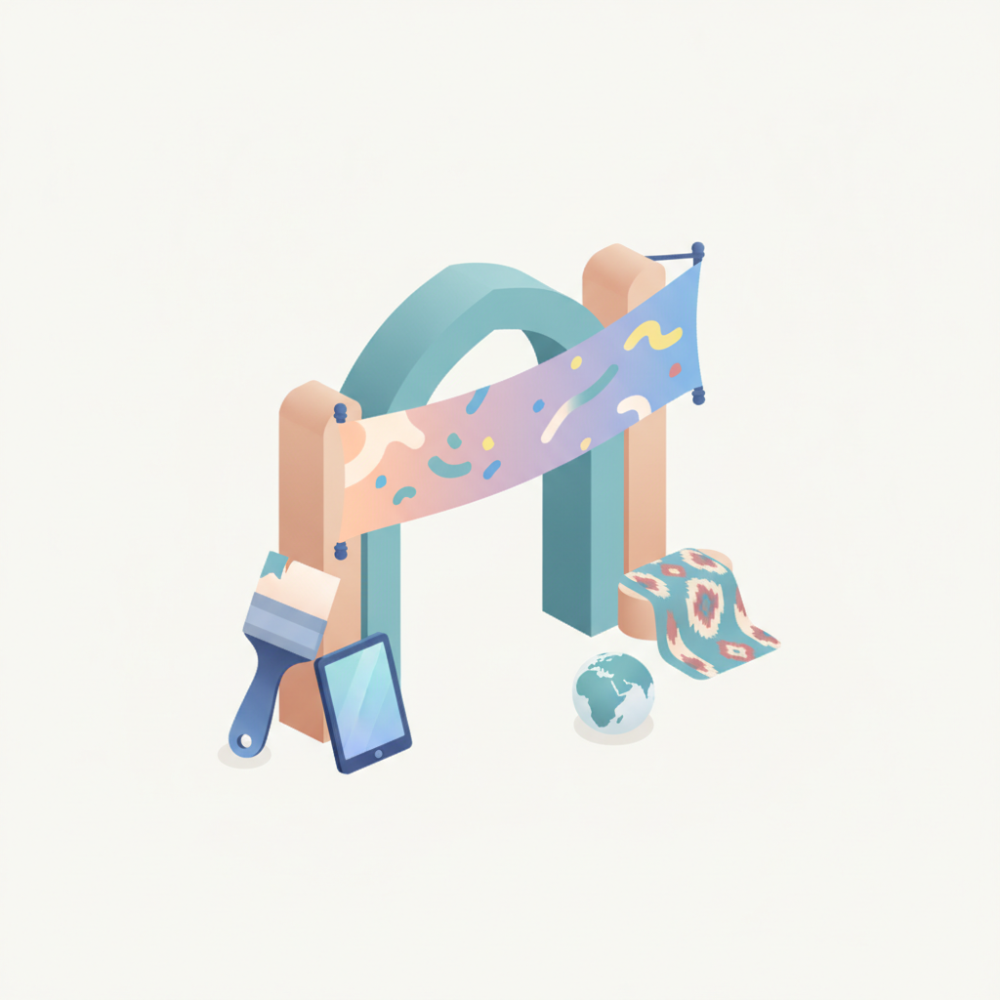
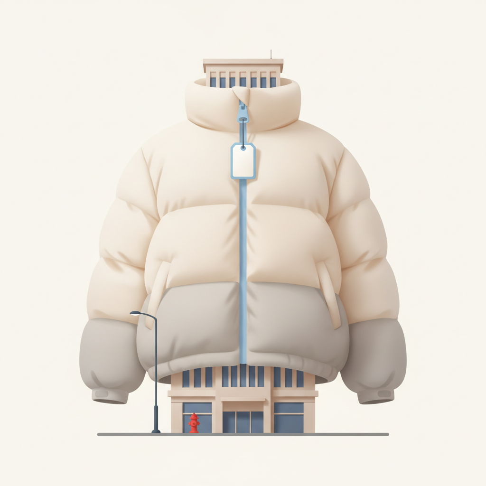
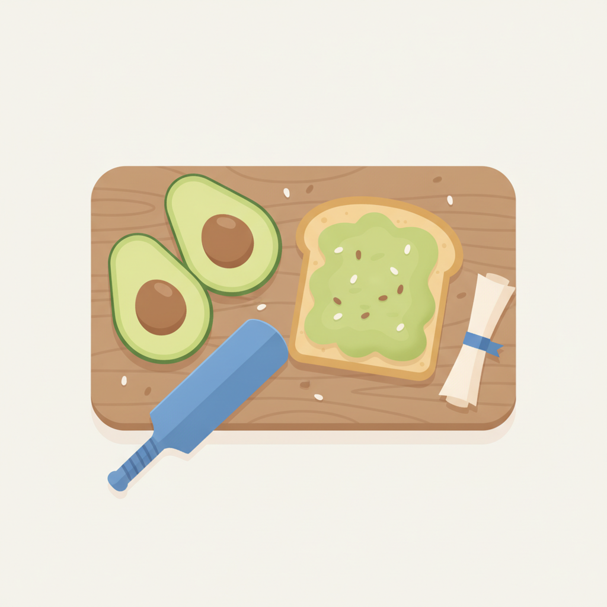
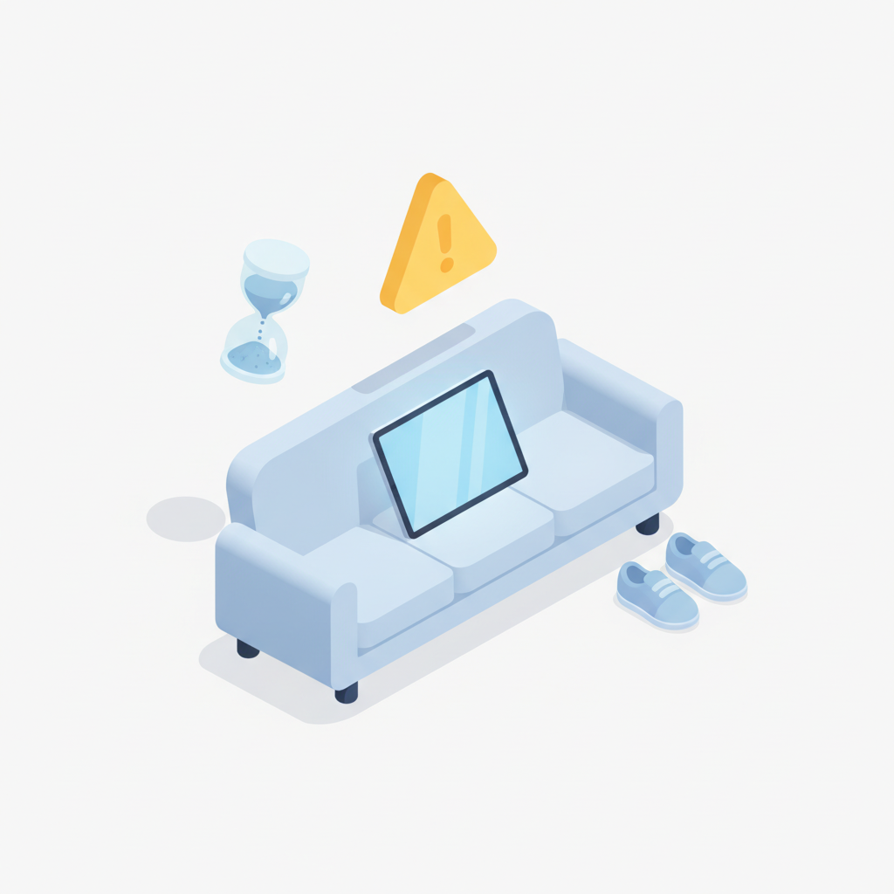

안녕하세요! 화요일 마케팅 소식 전해드립니다 😊 오늘은 해외 크리에이티브 캠페인 두 편이 함께 읽기 좋습니다. 아리치아는 대표 제품 슈퍼 퍼프를 건물 전체를 뒤덮는 초대형 설치물로 구현해 뉴욕 한복판을 브랜드 공간으로 바꿔버렸고, 아식스는 "하루의 86%를 움직이지 않는다"는 데이터를 전면에 내세우며 움직임의 필요성을 경고하는 캠페인으로 브랜드 메시지를 날카롭게 벼렸습니다. 두 사례 모두 제품 기능을 설명하는 대신, 브랜드가 전달하려는 세계관을 감각적으로 체험하게 만든다는 공통점이 있습니다.
캐릿에서 전한 소식도 흥미롭습니다. 네컷사진을 타투 도안으로 활용하는 흐름이 Z세대 사이에서 번지고 있다는 내용인데, 즉흥적이고 비보정된 순간의 이미지를 영구적인 형태로 남긴다는 발상이 독특합니다. 완성도보다 진짜 순간을 더 가치 있게 여기는 감각이 소비 행동으로 이어지고 있다는 신호로 읽히고, 브랜드가 Z세대와 어떤 온도로 소통해야 할지를 생각해볼 수 있는 지점입니다.
화요일 아침도 좋은 인사이트와 함께 힘차게 시작하시길 바랍니다! 🔥

1이드의 HR 커피챗 시리즈 ※ 내가 쓰는 글들은 개인적인 경험과 고민을 바탕으로 한 지극히 개인적인 의견이다. 특정 누군가를 비판하는 것도, 정답을 말하는 것도 아니니 가볍게 읽어주면 좋겠다. (자문/컨설팅 문의) 낡은 유행인데 왜 못 버릴까 조직문화라는 단어의 유행은 이미 끝났다고 생각한다. 그런데 신기하게도 회사들은 이 단어를 여전히 못 버리고 있다. 채용 […] The post [이드의 스타트업 모험기] 왜 아직도 조직문화를 직원만족도로 평가하는가 appeared first on 모비인사이드 MOBIINSIDE .
›
2[우즈베키스탄 타슈켄트=유다정 기자] 우즈베키스탄이 크리에이티브 경제를 국가의 새로운 성장 동력으로 키우고 있다. 중앙아시아 크리에이티비티의 중심으로 자리매김해 온 '졸보르스 페스티벌(Jolbors Festival)'도 글로벌 무대로 외연을 넓히며, 지역의 크리에이티브 산업을 세계와 연결하는 핵심 축으로 부상하고 있다. 생성형 인공지능(AI)이 광고와 콘텐츠 제작의 문턱을 낮춘 지금, 졸보르스는 중앙아시아만의 역사와 문화, 사람들의 실제 경험과 관점이 글로벌 크리에이티브 시장에서 새로운 경쟁력이 될 수 있다는 가능성을
›
3[ 매드타임스 최승은 기자] 캐나다 패션 브랜드 아리치아(Aritzia)가 대표 제품 ‘슈퍼 퍼프(Super Puff)’를 건물 크기로 키워 뉴욕 로어이스트사이드에 설치했다. ‘슈퍼 자이언트 퍼프(Super Giant Puff)’라는 이름의 이 설치물은 159 러들로 스트리트 건물 외벽을 뒤덮었으며, 10월 1일까지 공개됐다.거대한 패딩을 만든 이유는 슈퍼 퍼프의 기능 개선을 알리기 위해서다. 새 제품에는 800+ 필파워 다운이 적용됐으며, 아리치아는 이전보다 가벼우면서도 높은 보온성을 갖췄다고 밝혔다. 숫자로만 보면 쉽게 와닿지
›
4[ 매드타임스 한수경 기자] 호주의 대표적인 아침·브런치 메뉴인 아보카도 토스트를 ‘국가 공식 아침 메뉴’로 지정하자는 이색 청원이 등장했다. 호주 아보카도(Australian Avocados)는 호트 이노베이션(Hort Innovation), 에이전시 싱커벨(Thinkerbell)과 손잡고 전 크리켓 선수 머브 휴즈(Merv Hughes)를 앞세워 호주인들의 서명을 받고 있다.청원의 이름은 ‘핏티션(Pit-tition)’이다. 청원을 뜻하는 ‘petition’과 아보카도 씨를 뜻하는 ‘pit’을 합친 말이다. 호주인들에게 익숙한
›
5[ 매드타임스 최승은 기자] 소파와 스크린, 움직이지 않아도 많은 일을 해결할 수 있는 편리한 생활이 사람들의 일상적인 움직임을 줄이고 있다. 아식스(ASICS)는 이런 현대인의 모습을 자연 다큐멘터리의 시선으로 바라본 단편 영상 ‘휴먼 네이처(Human Nature)’를 공개하고, 이를 ‘세계 최초의 움직임 보전 경고(conservation warning for movement)’라고 이름 붙였다.아식스가 실시한 조사에서 응답자들은 깨어 있는 시간의 86%를 움직이지 않고 보낸다고 답했다. 어떤 날은 거의 움직이지 않는 경우도 있
›브랜드 진단부터 지금 당장 해야 할 우선순위까지,
30분 무료 상담에서 함께 정리해드려요.
이미 수십 개 브랜드가 상담받았습니다.
내 브랜드처럼, 함께 고민하는 팀원의 마음으로 봅니다.
스타트업 대표·마케팅 담당자를 위한 30분